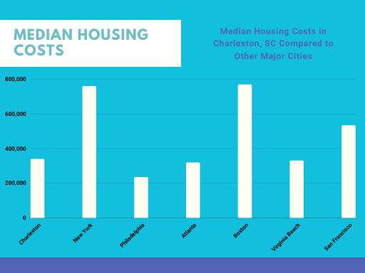
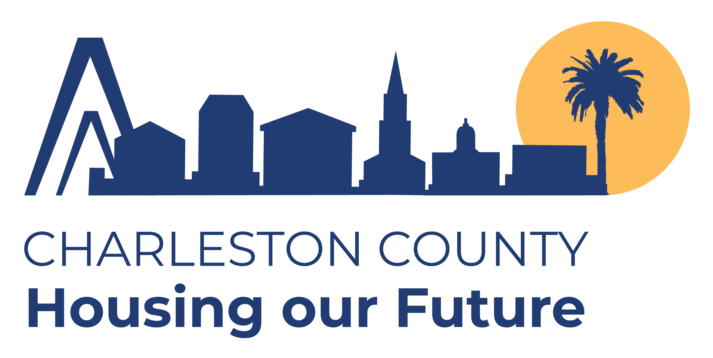

As the sun sets over Charleston’s historic streets, the city’s beauty is undeniable. However, for many long-time residents, this charm masks a pressing issue that threatens their very way of life: a severe shortage of affordable housing.
Personal Struggles: Lisa and James
Meet Lisa and James, a couple who has lived in Charleston for over a decade. They once reveled in the city’s vibrant atmosphere but now struggle to keep their home. “Every month feels like a juggling act,” Lisa says. “We have to choose between paying rent and buying groceries. It’s exhausting.” With rent averaging $1,794 per month—15% above the national average—families like Lisa and James often sacrifice basic needs just to keep a roof over their heads.

The Supply-Demand Dilemma
As Charleston’s population continues to surge, driven by newcomers attracted to its coastal beauty, the demand for housing far outstrips supply. Bryan Grady, chief research officer for SC Housing, sheds light on the situation: “In Charleston specifically, it’s supply and demand. There are a lot of people that want to live there and only so much available land to build on” (Baldwin). The landscape is changing; luxury developments are rising, while affordable options dwindle. For many, this shift leaves them grappling with uncertainty.
Impact on Students
The crisis doesn’t just affect families; it impacts college students, too. Students at the College of Charleston are facing the brunt of rising rents, leading some to contemplate transferring to more affordable schools. “It’s frustrating,” says Sarah, a sophomore who dreams of finishing her education in Charleston but is worried about the financial burden. “I want to stay here, but I can’t keep paying these prices.” Her concerns resonate with many students who find themselves navigating an increasingly challenging housing market.
Eviction Rates and Their Consequences
High eviction rates further complicate the issue. In South Carolina, the rate stands at 89 per 1,000 renter households—well above the national average. For families like the Garcias, who live paycheck to paycheck, this reality is frightening. “One missed payment could mean losing everything,” Maria Garcia explains. “It’s a risk we take every month.” With just 72,000 subsidized housing units available—enough for only one in five low-income households—this crisis is a palpable reality for many in the community (Magxaka).

Government Response: A Struggle to Meet Needs
Despite the urgency of the situation, Charleston’s government has struggled to respond effectively. The recent “Housing Our Future” plan acknowledges the need for 16,351 new affordable housing units by 2030, yet meeting this goal remains daunting. Councilman Ross Appel admits the challenge: “We have to get more supply in the market… [but] there’s only so many affordable housing units the City of Charleston can bring on board.” (Baldwin).
A Call for Balanced Development
For the city to thrive, it must strike a balance between development and community welfare. Experts suggest stronger policies, such as rent control and inclusionary zoning, to stabilize the housing market. “We need to put residents first,” emphasizes local activist Mark Thompson. “A vibrant community is built on inclusivity, not just profit.”
Preserving Charleston's Essence
As the city navigates this crisis, it’s essential to remember the stories behind the statistics. For Lisa, James, and countless others, Charleston isn’t just a picturesque backdrop; it’s home. The ongoing affordable housing crisis threatens to erode the very fabric of this beloved community, pushing residents out in search of a place they can afford. If Charleston is to preserve its unique character and charm, it must prioritize the needs of its residents over profit-driven development. The time for action is now—before the very essence of this vibrant city is lost to the rising tide of unaffordability.
{kind=link}